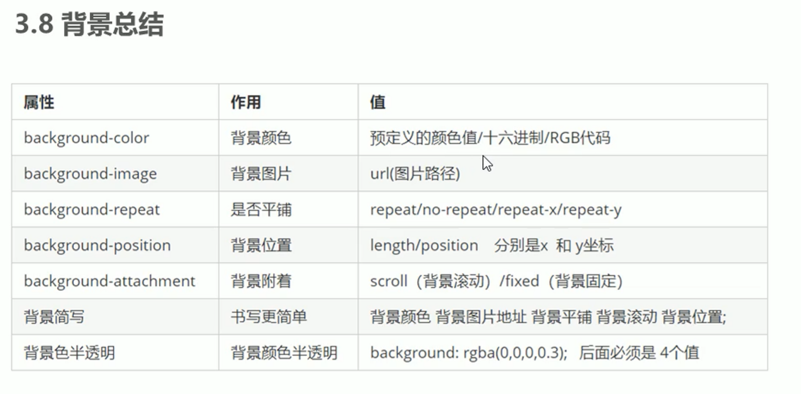

| 属性 | 作用 | 值 |
|---|---|---|
| background-color | 背景颜色 | 预定义的颜色值/十六进制/RGB代码 |
| background-image | 背景图片 | url(图片路径) |
| background-repeat | 背景平铺 | repeat/no-repeat/repeat-x/repeat-y |
| background-position | 背景位置 | lenght/position 分别是x和y坐标 |
| background-attachment | 背景附着 | scroll：背景滚动 fixed：背景固定 |
| 背景简写 | 背景简写 | 背景颜色 背景图片地址 背景平铺 背景滚动 背景位置; |
| 背景色半透明 | 背景颜色半透明 | background:rgba(0,0,0,0.3) |
背景图片：实际开发中常见于logo或者一些装饰性的小图片或者是超大的背景图片，优点是非常便于控制位置（精灵图也是一种运用场景）
